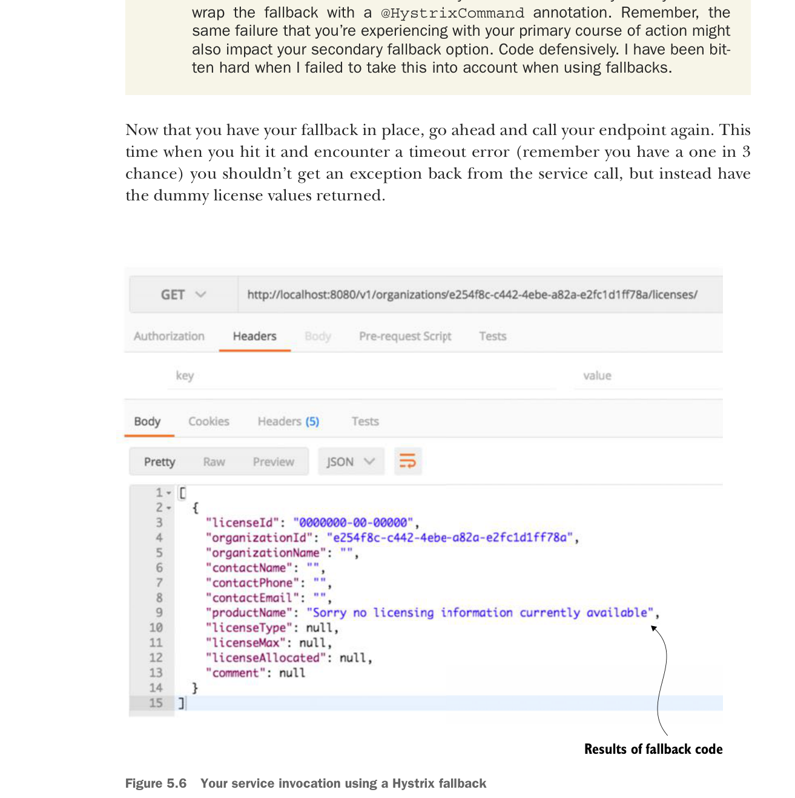

ngoại lệ và chỉ ghi log lỗi rồi dừng lại, thì bạn có lẽ nên dùng khối try..catch chuẩn bọc quanh lời gọi dịch vụ, bắt HystrixRuntimeException, và đặt logic ghi log trong khối try..catch.
- Hãy lưu ý các hành động bạn thực hiện trong các hàm fallback. Nếu trong dịch vụ fallback bạn gọi ra một dịch vụ phân tán khác, bạn có thể cần bọc fallback bằng annotation
@HystrixCommand. Hãy nhớ rằng cùng một lỗi mà bạn gặp với hướng xử lý chính cũng có thể ảnh hưởng đến phương án fallback phụ. Hãy lập trình phòng thủ. Tôi đã từng phải trả giá đắt khi không tính đến điều này khi dùng fallback.
Giờ khi đã có fallback, hãy gọi lại endpoint của bạn. Lần này khi bạn gọi và gặp lỗi timeout (nhớ rằng bạn có xác suất 1 trên 3), bạn sẽ không nhận ngoại lệ từ lời gọi dịch vụ, mà thay vào đó nhận các giá trị license giả trả về.

Lời gọi dịch vụ của bạn dùng fallback Hystrix.